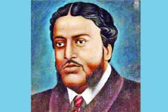

Michael Modhushudon College, in Jessore District, is one of the largest educational institutions in Khulna Division, Bangladesh.The college is named after famed educationalist and intellectual Michael Madhusudan Dutt. It has about 26,000 students and 19 faculties. It gives four years bachelor's and one years master's course opportunities under Bangladesh National University. The college also offers Higher Secondary subjects including science, commerce, and arts under the Board of Intermediate and Secondary Education, Jessore.
History
Michael Modhushudon University College was established in 1941 as Jessore College. Dhirendranath Kar was the first principle of the college. In the first year the college had 146 students of whom 109 were Hindus and 37 Muslims. The college had two separate dorms for Hindu and Muslim students. During World War Two, the college building was converted to a troop barracks for the British Army. Classes were moved the estate office of the Zamindar of Hatbaria and were shifted back in 1945. In 1945, the college was renamed to Michael Madhusudan College. The college was nationalised in 1968.